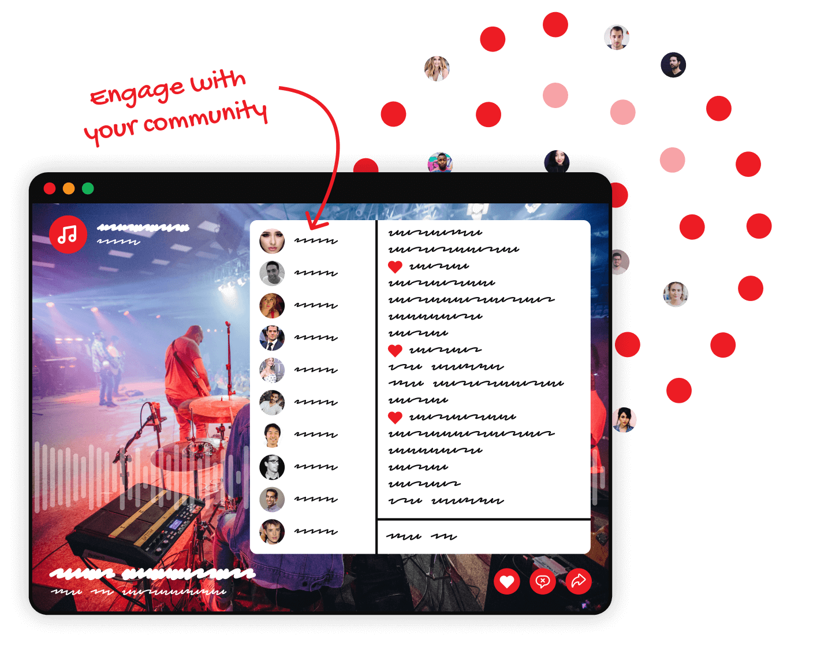
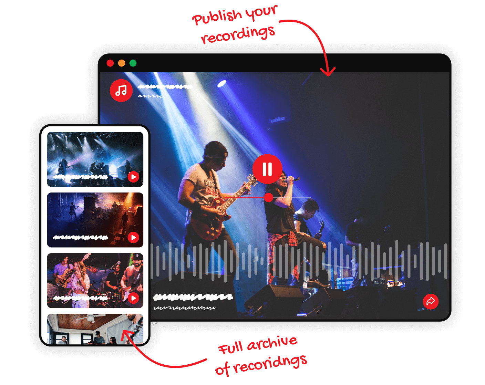
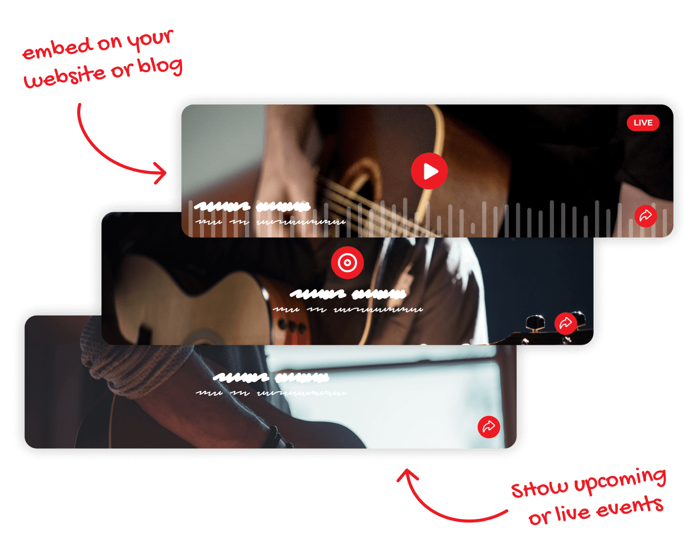

Our broadcast apps with your audio setup
Plug and play your audio into the mobile or desktop broadcast app. Keep it simple with one audio source for mobile. Or use the desktop app for a mix of audio input and a playlist of sounds. Your audio, done your way.
.png)
No limits to audience size
Reach an audience as big as you need. Connect, chat and engage with listeners all over the world with the confidence that everyone will be able to connect to your live stream. Mixlr has dedicated servers set aside, allowing you to scale your broadcasts as big as you need without extra costs.

Your own channel, a custom website for audio
This is where all your audio is hosted. People can listen live while chatting or play back recordings. The custom players are ad-free, feature audio visuals and an immersive full-screen experience. Brand your channel with a logo, custom background and personalized URL. It's your site for your audio.
.png)
Showcase your recordings collection
Record your broadcasts and publish them to your channel when you're ready. Listeners can visit your entire archive of past broadcasts and share direct links to their favorites.

Custom embeddable player
Make it easier for people to come across your audio. Embed an ad-free player to your other existing sites to promote your audio content. It's as simple as copying and pasting an HTML widget code.
